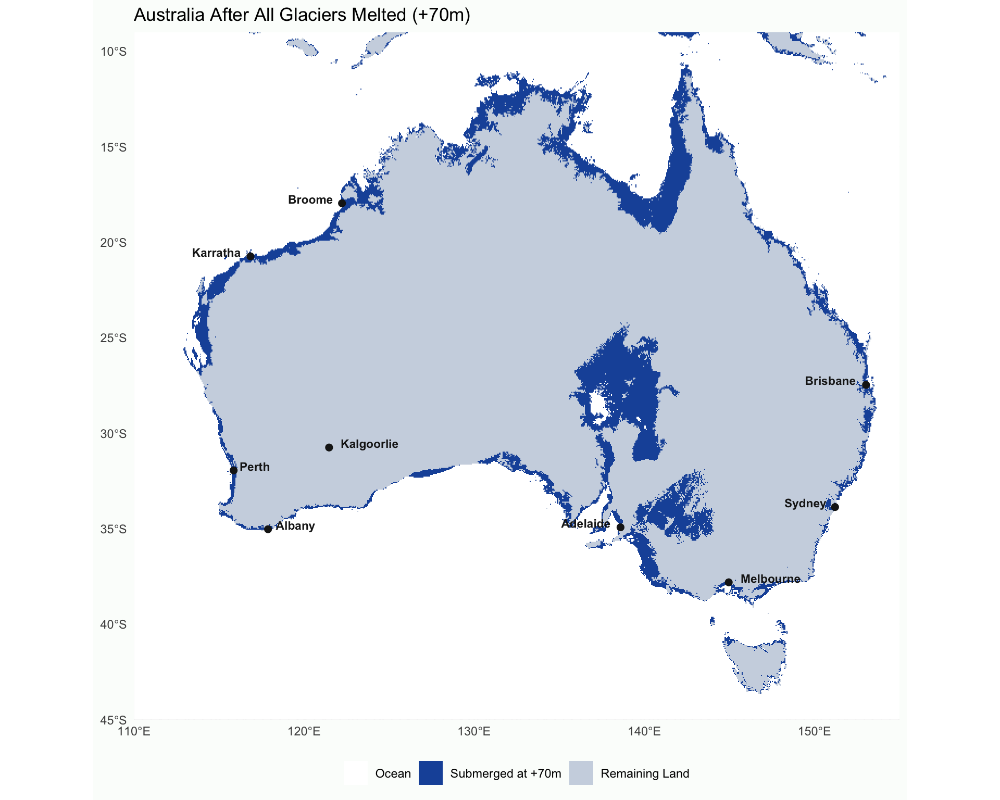
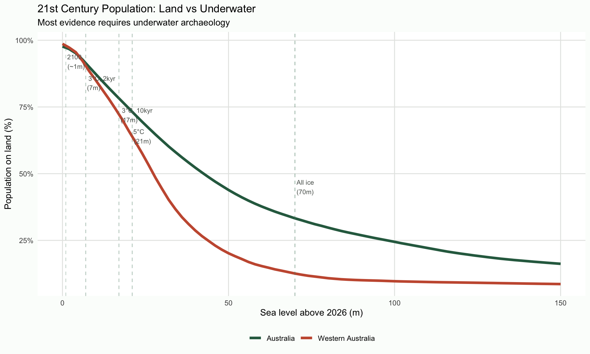
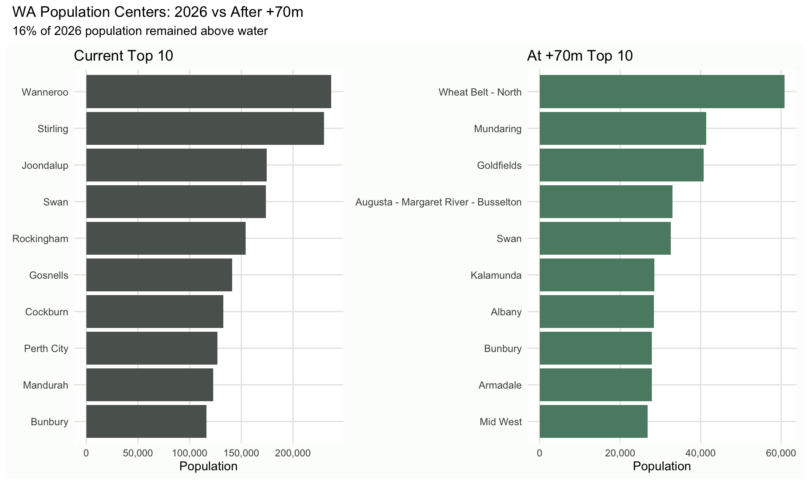
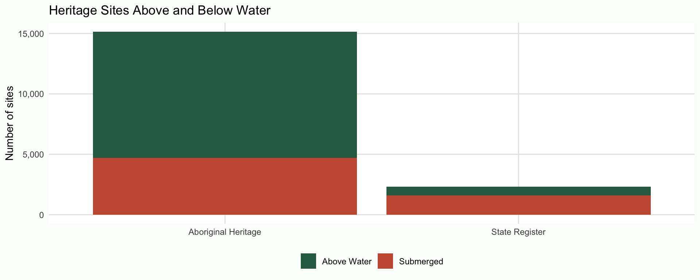

For most of Australia's human past, sea levels were much lower than today. The Last Glacial Maximum saw seas rise over 120m, submerging 2.12 million km². You can explore what that looked like here.
One of the reasons underwater archaeology is important is that it reveals a very different world: for Australia this can show how people lived in a cooler world before the modern warm climate, and before people migrated due to sea-level rise.
To wrangle on the importance of underwater work, we could work through a thought experiment: what happens when sea levels rise again? What does the 21st century look like to our future colleagues: the maritime archaeologists based in Western Australia's capital of sunny Kalgoorlie, carefully lifting a waterlogged iPad from the foundations of an 'Osborne Park JB Hi-Fi HOME', 50m underwater?
By the end of the 21st century, scientists accurately predicted about a metre of global mean sea-level rise, which doesn't sound like much, but prior to that even the ancient city of Fremantle was entirely on land. Sources vary, but conservatively they warmed the world by 3 degrees, and over the next 2,000 years sea levels rose at least 7m higher; some historians suggest that the warming peaked close to 5 degrees, and rose 21m (IPCC). During that time the world was as warm as the last Interglacial, which 21st century scientists contemplated on Wadjemup / Rottnest Island, where they walked along the Fairbridge Bluff Acropora reef on land. Over many thousands of years, all glaciers and ice sheets melted, raising global mean sea level by >60m to ~70m, compared to 2026.
From the Australian Bathymetry and Topography Grid 2024, we can see Australia lost around 970 thousand km², and Western Australia lost around 190 thousand km² - less than the 2.12 million km² lost when the ice age ended, but very substantial.

How much of 21st century archaeology is available to land-based archaeologists without requiring underwater work? After 70m of sea level rise, around 32% of Australia's population is accessible without diving. Despite Western Australia's economy stretching far inland with agriculture and mining, only 16% of the population remains above water; the state was more affected than the more diverse eastern states, and different sorts of sites may be underwater.

To understand 21st century population centers, historical archaeologists use the ABS Estimated Resident Population. Analysing this by SA3 shows where people lived at the time versus what remains on land.
The ancient city of Perth has been of interest to underwater archaeologists; while the surviving metropolises of Kalgoorlie, Mundaring, and Margaret River were likely similar in importance to the former capital, it is possible their demographic, economic, and social structures differed in interesting ways.

Due to excellent preservation of open data, we can access the 2026 copies of the WA State Heritage Register and the Aboriginal Cultural Heritage Register. The results are quite surprising, and suggest the possibility there may be more archaeology underwater! This supports the arguments of maritime archaeologists suggesting coastal settlement prior to and during the 21st century, but still our much better modern data suggest this was likely peripheral, and most cities were far inland up until the last few thousand years. The site of Devil's Lair remains the oldest dated site in the southwest, high up on the limestone ridge where it has been preserved.
